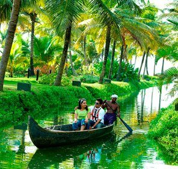
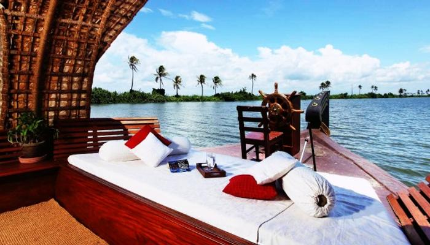
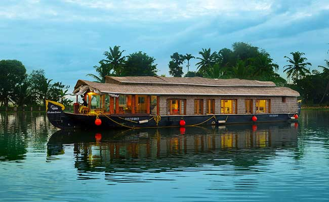

Kerala Honeymoon Package
 |
 |
 |
 |
8Days/7Night
Jumbo Discount Price Rs.40,099/-
About the Destination
Kerala is located on the southwestern Malabar Coast. It came into existence in 1956 after Malayalam speaking regions were reorganized. Kerala was ruled by many dynasties over the centuries, the most notable among them being the Chera Dynasty, the Ay kingdom, and the Ezhimala kingdom. In the latter ages, colonial powers were attracted to this region.
Experience Kerala on a Honeymoon
For couples on a Kerala trip package, Kerala is not just a destination but an experience to get totally consumed. And the memories of the trip will not leave your heart anytime soon. A honeymoon is a special time for a couple to know each other better and Kerala honeymoon packages provide the most spectacular backdrop to your sweet nothings. The lush slopes of tea plantations, a secluded beach in Marari, the remarkable wildlife species in Periyar National Park or the hauntingly beautiful Wayanad; couples on a Kerala tour are spoiled for choice.
Things to Do in Kerala during your Honeymoon
- Munnar
- Alleppey
- Fort Koch
- Wayanad
Best Time to Visit Kerala
The best time to take a honeymoon trip to Kerala is the winter season from September to February when the weather is pleasant. June to August are the monsoon months and the region experiences heavy rainfall and it could hamper your plans.

|
|